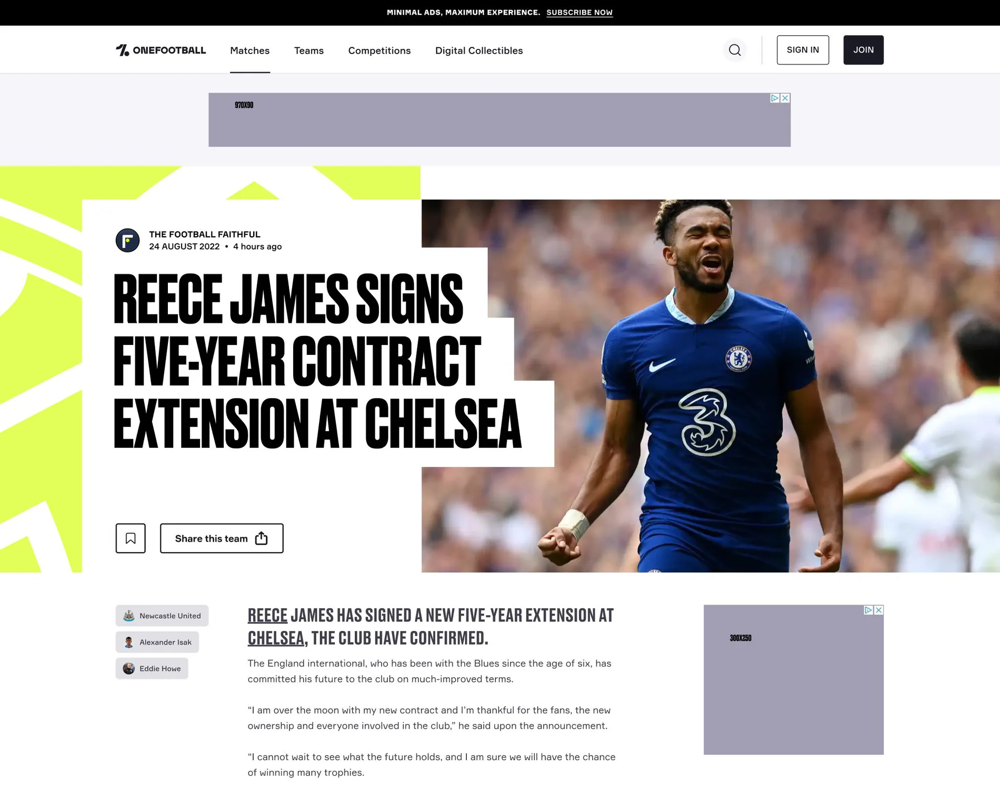
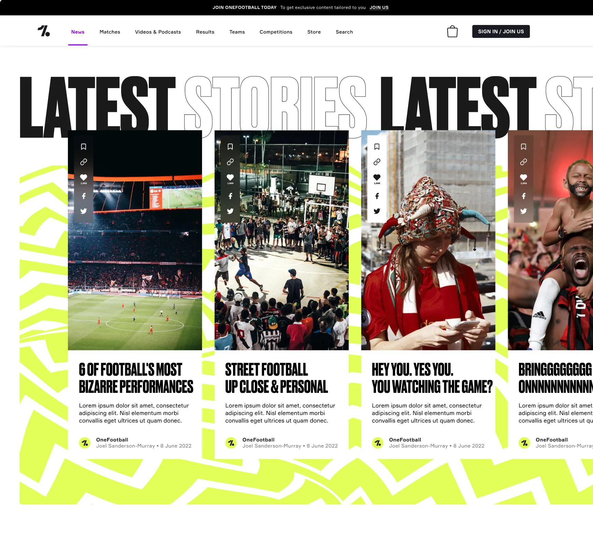
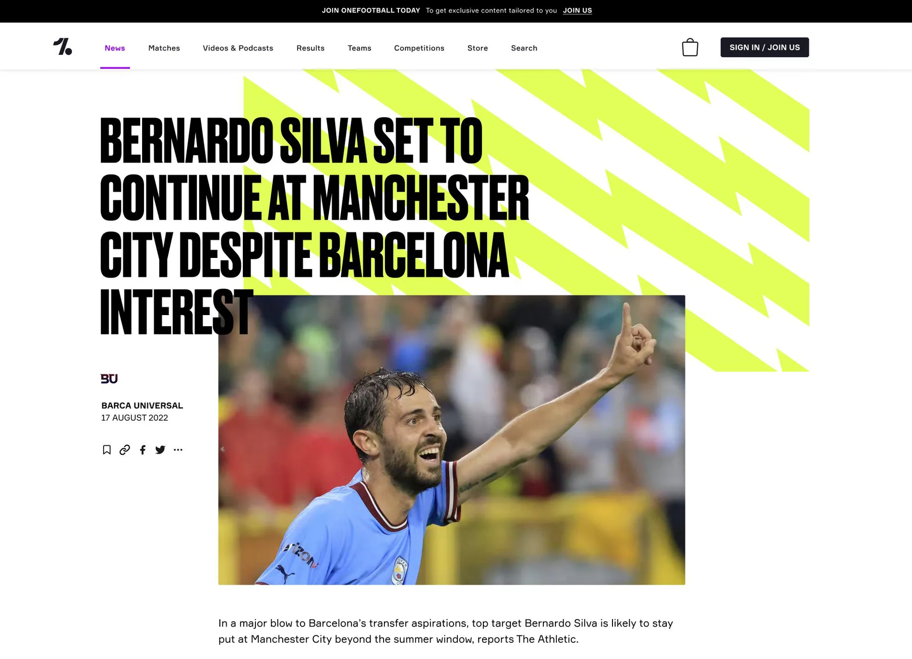
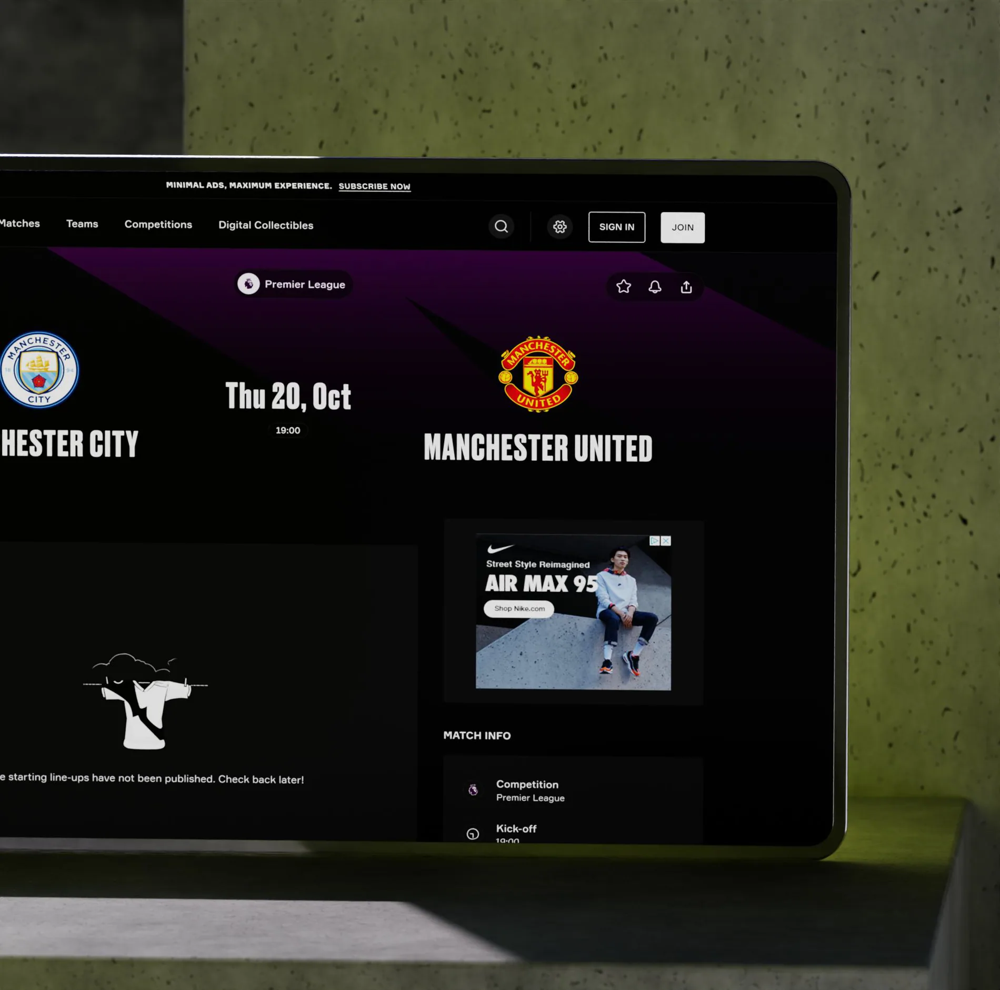
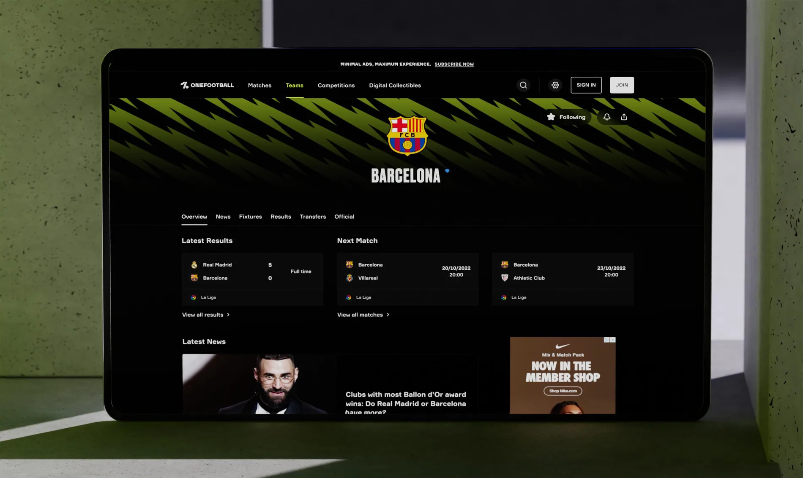

OneFootball
A new expression for the beautiful game.
SCROLL TO EXPLORE
A stronger brand expression for the beautiful game.
Refreshing key content layouts while respecting the realities of an established component system and engineering constraints.
- Project
- OneFootball
- Role / disciplines
- Digital product / Visual design
- Period
- 2022
Change the experience, not every component.
Develop concepts for redesigning the site's pages, taking into account the new branding, with minimal changes in existing components.



After analyzing the situation, I determined that altering existing components would require excessive effort from the development team. To introduce the new branding effectively, I focused on redesigning the Hero Section, the first element users see on the page. Using the project designer's UX prototypes as a foundation, I created Hero Sections for the Article, Team, and Match pages. I also made minor adjustments to existing components to ensure overall consistency with the new brand identity.
A system built to hand over.
Proper Delivery of all working files to the Client, including components, pages and style guides.

At the end of the project, I developed over 20 complex composite components, 4 page templates, and generated ideas for future redesigns, pending current restrictions. I collaborated with the design manager from OneFootball to organize these into two Figma files: one for the Style Guide, which included instructions, design language, components, icons, and assets; and another, Consumer Web - Templates, for redesigned pages across all breakpoints. The components in the Style Guide were designed to be flexible, supporting both dark and light themes, and optimized for various devices.
